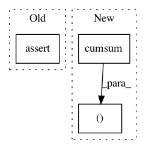

818f53a80a6b2b866781440d1669cef1859f69f6,scipy/stats/tests/test_discrete_basic.py,,check_pmf_cdf,#Any#Any#Any#,161
Before Change
startind = np.int(distfn._ppf(0.01,*arg)-1)
index = list(range(startind,startind+10))
cdfs = distfn.cdf(index,*arg)
npt.assert_almost_equal(cdfs, distfn.pmf(index, *arg).cumsum() +
cdfs[0] - distfn.pmf(index[0],*arg),
decimal=4, err_msg=msg + "pmf-cdf")
def check_generic_moment(distfn, arg, m, k, decim):
npt.assert_almost_equal(distfn.generic_moment(k,*arg), m, decimal=decim,
After Change
def check_pmf_cdf(distfn, arg, msg):
startind = np.int(distfn.ppf(0.01, *arg) - 1)
index = list(range(startind, startind + 10))
cdfs, pmfs_cum = distfn.cdf(index,*arg), distfn.pmf(index, *arg).cumsum()
npt.assert_allclose(cdfs - cdfs[0], pmfs_cum - pmfs_cum[0],
atol=1e-10, rtol=1e-10)
def check_generic_moment(distfn, arg, m, k, decim):
In pattern: SUPERPATTERN
Frequency: 3
Non-data size: 3
Instances
Project Name: scipy/scipy
Commit Name: 818f53a80a6b2b866781440d1669cef1859f69f6
Time: 2013-12-08
Author: evgeni@burovski.me
File Name: scipy/stats/tests/test_discrete_basic.py
Class Name:
Method Name: check_pmf_cdf
Project Name: RaRe-Technologies/gensim
Commit Name: cac5f014c09193f7a5ad6b71e4012defa0a96baa
Time: 2010-09-05
Author: radimrehurek@seznam.cz
File Name: src/gensim/matutils.py
Class Name:
Method Name: corpus2csc
Project Name: RaRe-Technologies/gensim
Commit Name: c55d1b295cb6717ba6494917b88183e8d3f284a9
Time: 2010-09-05
Author: piskvorky@92d0401f-a546-4972-9173-107b360ed7e5
File Name: src/gensim/matutils.py
Class Name:
Method Name: corpus2csc